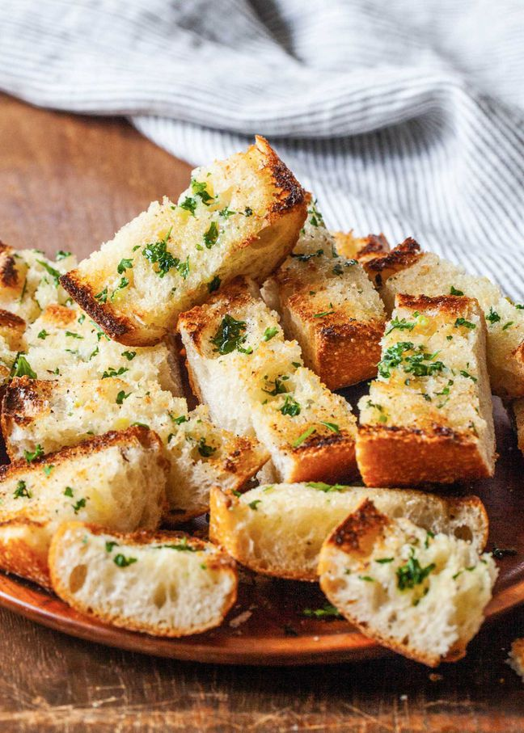

Garlic Bread Recipe

Description
Here's how to make the BEST garlic bread! Two classic garlic bread methods: toasted and crisped under the broiler, the other soft from being wrapped in aluminum foil and heated in the oven.
Ingredients
- 1 16-ounce (450 g) loaf Italian bread or French bread
- 1 16-ounce (450 g) loaf Italian bread or French bread
- 1 16-ounce (450 g) loaf Italian bread or French bread
- 1 16-ounce (450 g) loaf Italian bread or French bread
How to make
- Cut the loaf in half, horizontally. Mix the butter, garlic, and parsley together in a small bowl. Spread butter mixture over the the two bread halves.
- Place on a sturdy baking pan (one that can handle high temperatures, not a cookie sheet) and heat in a 350°F (175°C) oven for 10 minutes.
- Remove pan from oven. Sprinkle Parmesan cheese over bread if you want. Return to oven on the highest rack.
- Remove from oven, let cool a minute. Remove from pan and use a bread knife to cut into 1-inch thick slices. Serve immediately.